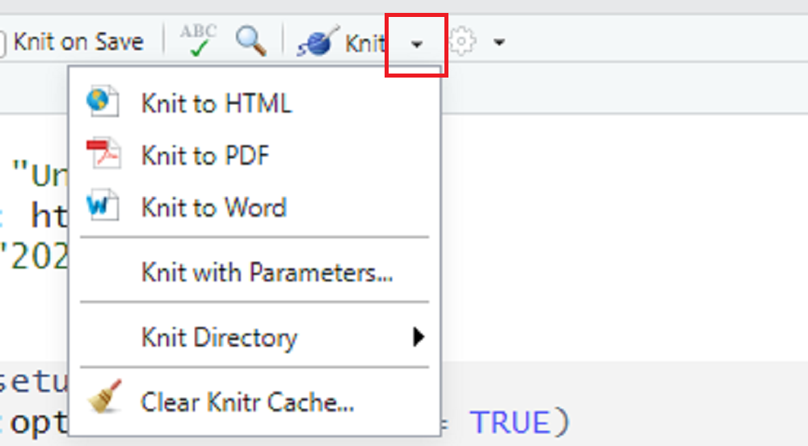

R Markdown
Exercises in RMD:
The exercises for this tutorial come in R Markdown format and are provided as zip files in the relevant chapters (W, A, D, M, S). This provides you the advantage of seamlessly integrating code, outputs, and narrative text into a single document. You can then easily “knit” (the process of converting your R Markdown file into a finalized document) this file into various formats like PDF or Word (DOC / DOCX), which are widely used for academic or professional submissions. This makes it simpler for you to submit your exercises in a neat, organized manner, without the hassle of copying code or outputs from one platform and pasting them into another.
Introduction
Welcome to this tutorial on working with RMD files in RStudio! RStudio is an IDE that makes R programming easier and more efficient, while R Markdown (RMD) is a file format that enables you to create dynamic reports with R code and narrative text. Using R Markdown within RStudio allows you to compile your analyses and reports into a single, easily shareable document in multiple formats like HTML, PDF, or Word.
RStudio is an Integrated Development Environment (IDE), which is a software application that provides comprehensive facilities for software development. An IDE typically includes a text editor, tools for building and running code, and debugging utilities.
Prerequisites
Before starting this tutorial, make sure you have both R and RStudio installed on your computer, as explaied in an earlier tutorial.
Knitting RMD
This document shows how to work with an RMD file. We can create dynamic documents, e.g., a document with simple plain text combined with R code and its outputs. Note that RMD files are designed to be used with the R package rmarkdown. In RStudio IDE, the rmarkdown package could be already installed.
Open on RStudio
Let us open an RMD file in RStudio. From the file menu (on the side), we can create a new RMD document. First, we need to click on the + symbol to create a new file, as follows:

Second, we need to click R markdown... to create a new RMD document as follows:
We will see a pop-up window as follows:
We can select whether we want to convert our RMD file to an HTML, PDF, or a Word document. These options can also be selected later. Let us select the default option (HTML) and press OK. We will see the markdown file as shown in the picture below:
Knit
We use the knit option to create a document (e.g., making a PDF, HTML, or Word document) from the RMD file. Before knitting, we need to save the file. Let us save the file as working.RMD. After saving the file, we can knit it by clicking on the knit option, as shown below:
The term “knit” may sound a bit strange in the context of programming. However, it aptly describes the process of combining your R code and narrative text to produce a cohesive, final document. Think of it as “weaving” your code and text together into various output formats like HTML, PDF, or Word.
Once we knit the file, it will produce an HTML output, since our default option was HTML.
For formats other than HTML (e.g., PDF or Word), we can click on the dropdown menu:

Let us select Knit to Word and knit it. Once the file is rendered, RStudio will show us a preview of the output in a word file and save the file in our working directory. We can also see that Word is added as another output:
When you’re working in RStudio, all your files and outputs will be saved in a ‘working directory.’ This is simply the folder on your computer where RStudio will look for files and save outputs. To find out what your current working directory is, you can run the command getwd() in the R console.
In the R terminal, we can see that a Word document is created, which is stored in our working directory:
Similarly, we can create a pdf by clicking Knit to PDF option from the Knit menu. However, we could see an error message as follows:
It is important to note that RStudio does not build PDF documents from scratch. If we want to create PDF documents using RMD, we must have a LaTeX distribution installed on our computer. There are several options for LaTeX distributions, including MiKTeX, MacTeX, TeX Live, and so on. However, the recommended option for R Markdown users is TinyTeX. We can install TinyTeX using the R package tinytex. To install the package, run the following command: install.packages("tinytex").
LaTeX is a typesetting system commonly used for technical and scientific documentation. It is required for converting R Markdown documents to PDF format because it provides the text formatting commands that the rmarkdown package uses behind the scenes.
Once the tinytex package installation is complete, we can type tinytex::install_tinytex() to install the LaTeX distribution on our computer.
TinyTeX is a large package (~123 MB). The installation time will vary depending on your machine. Once the installation is complete, we can click Knit to PDF. Similar to the Word file, RStudio will display a preview of the PDF output and save the PDF in our working directory. We will also see that a PDF file has been created:
Working with RMD
Now we are ready to start writing plain text intermixed with embedded R code. For plain text, we can use the whitespace:
On the other hand, to embed a chunk of R code into our report, we use R code chunks. An R chunk surrounds the code with two lines that each contain three backticks. After the first set of backticks, we include {r}, which alerts knitr that we are going to include a chunk of R code:
Code chunks are segments of code that are contained within an R Markdown document. They allow you to run R code within the document itself, making your report dynamic and reproducible.
Below are some codes:
We can knit the file to see the document, which will include plain text, R code, and outputs from the R code. We can also see the output from a code chunk without knitting the entire file. For example, we can click the arrow on the right-hand side to execute the current code chunk:
Now we can see the following outputs:
Please also explore the drop down menu under Run to see the further options, including run the current code chunk, run all code chunk above, etc.
To omit the code from the final report while still including the results, add the argument echo = FALSE. This will place a copy of the results into your report.
Besides echo = FALSE, there are several other options you can include in your code chunks to control their behavior, like eval = FALSE if you don’t want to evaluate the code, or message = FALSE to hide messages. Take a look at the author’s page of comprehensive list of chunk options.
In the final report (e.g., Word or PDF), we often want to omit the code and only show the outputs. To do this, we can add the argument echo = FALSE in the R code chunk:
The resulting output will look as follows:
Tips and Troubleshooting
- If the
knitbutton is grayed out, make sure you have saved your RMD file first. - Encountering LaTeX errors? Make sure you’ve installed a LaTeX distribution like TinyTeX.
The following links could also be useful if you want to learn more:
Video content (optional)
For those who prefer a video walkthrough, feel free to watch the video below, which offers a description of an earlier version of the above content.